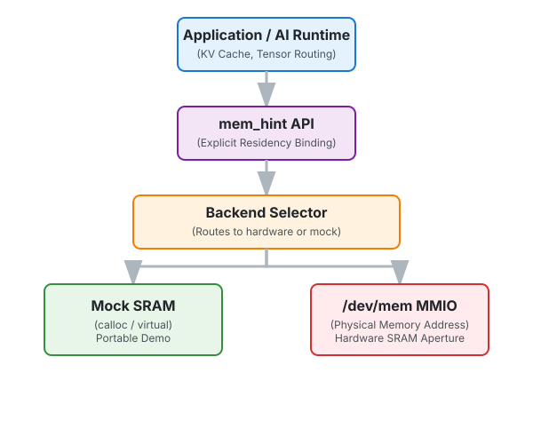
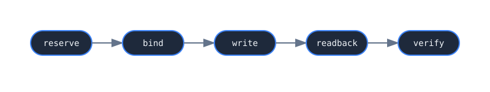

A memory-control-plane prototype for explicit SRAM-style residency.
Modern systems usually hide memory placement behind caches, coherence, and implicit hardware policy. This prototype explores the opposite: a small software-visible interface for reserving, binding, and verifying SRAM-like residency regions.
CPUs hide placement through complex hardware heuristics (L1/L2/L3), coherence protocols, and speculation. For general workloads, this is magic; for deterministic AI workloads, it's a bottleneck.
AI workloads like KV cache tiles, tensor tiles, and expert weights benefit from explicit placement to minimize tail latency and maximize throughput.
This repo demonstrates a tiny software control plane that gives applications direct control over where data lives in the hardware hierarchy.
A portable userspace implementation using calloc. Runs on any OS for rapid architecture testing and CI.
A hardware-facing Linux path that maps physical address ranges (FPGA BRAM, PCIe BAR, SoC SRAM) into userspace.
A clean C API for residency intent: reserve, bind, write, read, and verify.
A runnable demonstration of the entire flow in mock mode, including AI-centric examples for KV caches and tensors.
The stack bridges the gap between high-level AI runtimes and low-level hardware memory apertures.

A typical interaction involves reserving a region, binding it to a backend, and managing data residency.

$ make $ ./sram_demo [mem_hint] reserve "kv_tile_0" → SRAM [mem_hint] bind → offset 0x100 [mem_hint] write → 39 bytes [mem_hint] readback → verified ✔
| Backend | Platform | Purpose | Status |
|---|---|---|---|
| Mock SRAM | Any OS | Development/testing | Implemented |
| /dev/mem MMIO | Linux | Hardware SRAM aperture | Implemented |
| UIO/VFIO | Linux | Safer hardware mapping | Planned |
| /dev/mem_hint | Linux Kernel | Explicit residency control | Planned |
Explicitly binding active LLM attention blocks to fast on-chip memory.
Overlapping data movement with compute by manually staging tiles in SRAM.
Promoting active expert weights to fast residency before execution.
Managing non-coherent FPGA local memory from host software.
Pushing operands into local accelerator memory apertures.
Automated residency hints emitted by AI compilers like XLA or Triton.
⚠️ This is not a production driver. It is a design sketch for a memory control plane.
Raw /dev/mem access is dangerous and should be replaced by UIO/VFIO or a dedicated kernel driver in real systems.
Mock mode is provided for portability and architectural demonstration only. The future /dev/mem_hint interface is conceptual.
Fully functional userspace simulation.
MMIO support for physical hardware apertures.
GitHub Actions integration and AI-centric demo code.
Moving towards safer hardware mapping interfaces.
Conceptual character device for safe residency management.